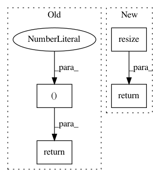

bb403781182c6e31d3bf5de16f42b0cb0d8421f7,baselines/common/atari_wrappers.py,WarpFrame,_observation,#WarpFrame#Any#,127
Before Change
frame = np.dot(obs.astype("float32"), np.array([0.299, 0.587, 0.114], "float32"))
frame = np.array(Image.fromarray(frame).resize((self.res, self.res),
resample=Image.BILINEAR), dtype=np.uint8)
return frame.reshape((self.res, self.res, 1))
class FrameStack(gym.Wrapper):
def __init__(self, env, k):
Buffer observations and stack across channels (last axis).
After Change
def _observation(self, frame):
frame = cv2.cvtColor(frame, cv2.COLOR_RGB2GRAY)
frame = cv2.resize(frame, (self.width, self.height), interpolation=cv2.INTER_AREA)
return frame[:, :, None]
class FrameStack(gym.Wrapper):
def __init__(self, env, k):
Stack k last frames.
In pattern: SUPERPATTERN
Frequency: 3
Non-data size: 4
Instances
Project Name: openai/baselines
Commit Name: bb403781182c6e31d3bf5de16f42b0cb0d8421f7
Time: 2017-10-25
Author: joschu@openai.com
File Name: baselines/common/atari_wrappers.py
Class Name: WarpFrame
Method Name: _observation
Project Name: bethgelab/foolbox
Commit Name: 6b5aa515e09e44f73439b07a8ac1079aaf9af440
Time: 2017-11-03
Author: git@jonasrauber.de
File Name: foolbox/utils.py
Class Name:
Method Name: imagenet_example
Project Name: PacktPublishing/Deep-Reinforcement-Learning-Hands-On
Commit Name: 02716e101ec2a8eb7284f95b17a7e589ffbc075d
Time: 2017-10-18
Author: max.lapan@gmail.com
File Name: ch06/01_dqn_pong.py
Class Name: ImageWrapper
Method Name: _observation